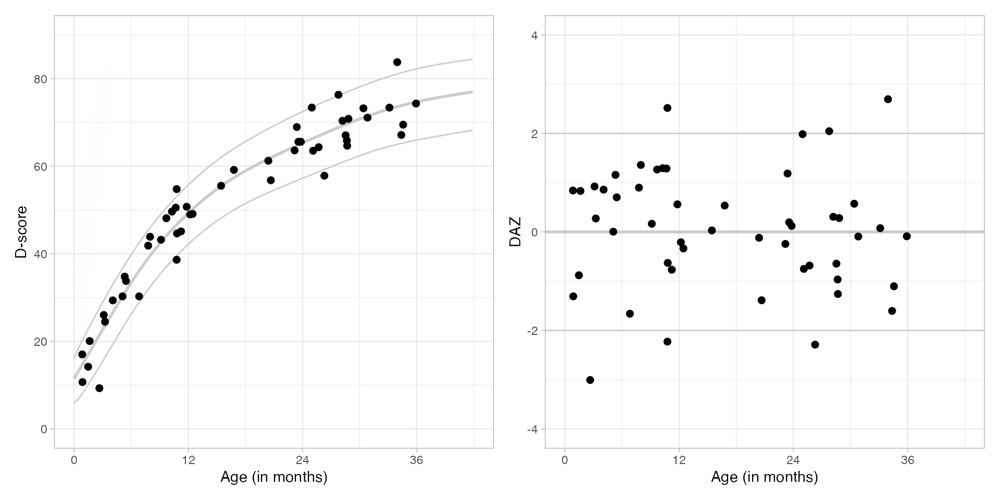
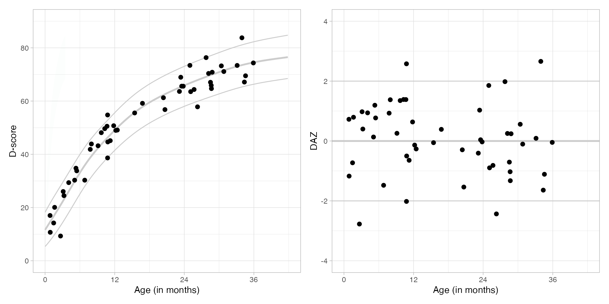
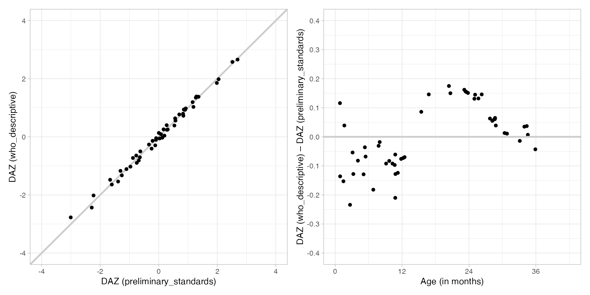

Suppose you have administered GSED SF, GSED LF (GSED Writing Team 2023; McCray et al. 2023) or GSED HF to one or more children. The next step is calculating each child’s developmental score (D-score) and age-adjusted equivalent (DAZ). This step is known as scoring. The present section provides recipes for calculating the D-score and DAZ. We may pick one of the following two methods:
R. The app contains online documentation and instructions
and will not be further discussed here.R package dscore. The R
package dscore at https://CRAN.R-project.org/package=dscore is a flexible
option with all the tools needed to calculate the D-score. It is an
excellent choice for users familiar with R and users who
like to incorporate D-score calculations into a workflow.R language. If you are new to R
consult the R for Data Science
book by Hadley Wickham and Garrett Grolemund;R package dscore
on your local machine;data.frame, a
standard R tabular structure;dscore() function to calculate the
D-score and DAZ. The function returns a table with six columns with the
estimates with the same number of rows as your data.dscore package
The dscore package contains tools to
The required input consists of item level responses on milestones collected using instruments for measuring child development, including the GSED LF, GSED SF and GSED HF.
There are two versions of the dscore package. For daily
use, we recommend the curated and published version on CRAN. In
R, install the dscore package as
install.packages("dscore")In some cases, you might need a more recent version that includes extensions and bug fixes not yet available on CRAN. You can install the development version from GitHub by:
install.packages("remotes")
remotes::install_github("d-score/dscore")The development version requires a local C++ compiler for building the package from source.
The dscore() function accepts item names that follow the
GSED 9-position schema. A name with a length of nine characters
identifies every milestone. The following table shows the construction
of names.
| Position | Description | Example |
|---|---|---|
| 1-3 | instrument | by3 |
| 4-5 | developmental domain | cg |
| 6 | administration mode | d |
| 7-9 | item number | 018 |
Thus, item by3cgd018 refers to the 18th item in the
cognitive scale of the Bayley-III. The label of the item can be obtained
by
library(dscore)
get_labels("by3cgd018")## by3cgd018
## "Inspects own hand"The dscore package maintains a list of items names.
Rows: One measurement, i.e., one test administration for a child at a given age, occupies a row in the data set. Thus, if a child is measured three times at different ages, there will be three rows for that child in the dataset.
Columns: There should be at least two columns in the data set:
1, a FAIL as 0. If
there is no answer or if the item was not administered use the missing
value code NA. Items that are never administered may be
coded as all NA or deleted.The dataset may contain additional columns, e.g., the child number or health information. These are ignored by the D-score calculation.
The most important steps is preparing the data for the D-score calculations are:
0, 1 or
NA
The table below lists the five available GSED instruments:
| Instrument | Year | Code | Domains | Mode | Range | Status |
|---|---|---|---|---|---|---|
| GSED SF | 2023 | gs1 |
cg|lg|li|mo|se |
c |
001-139 |
Active |
| GSED LF | 2023 | gl1 |
gm|lg|fm |
d |
001-049|052|054 |
Active |
| GSED HF | 2023 | gh1 |
cg|lg|li|mo|se |
c |
001-048 |
Active |
| GSED SF | 2020 | gpa |
any | c |
001-139 |
Retired |
| GSED LF | 2020 | gto |
gm|lg|fm |
d |
001-049|052|054 |
Retired |
GSED SF
The GSED Short Form (GSED SF) is a caregiver-reported
instrument containing 139 items. It has instrument code
gs1.
Obtain the full list of item name for as
instrument <- "gs1"
items <- get_itemnames(instrument = instrument, order = "indm")
length(items)## [1] 139
head(items)## [1] "gs1sec001" "gs1moc002" "gs1sec003" "gs1lgc004" "gs1moc005" "gs1cgc006"The order argument is needed to sort items according to
sequence number 1 to 139. Check that you have the correct version by
comparing the labels of the first few items as:
labels <- get_labels(items)
head(cbind(items, substr(labels, 1, 50)))## items
## gs1sec001 "gs1sec001" "SF001 Does your child smile?"
## gs1moc002 "gs1moc002" "SF002 When lying on his/her back, does your child "
## gs1sec003 "gs1sec003" "SF003 Does your child look at your face when you s"
## gs1lgc004 "gs1lgc004" "SF004 Does your child cry when he/she is hungry, w"
## gs1moc005 "gs1moc005" "SF005 Does your child grasp your finger if you tou"
## gs1cgc006 "gs1cgc006" "SF006 Does your child look at and focus on objects"Suppose that you stored your data with items names sf001
to sf139. For example,
## subjid agedays sf099 sf100 sf101 sf102 sf103
## 1 1 811 1 1 1 1 1
## 2 2 898 1 1 1 1 1
## 3 3 203 NA NA NA NA NA
## 4 4 966 NA NA NA 1 NA
## 5 8 770 1 1 1 0 1
## 6 9 306 NA NA NA NA NAMake sure that the items are in the correct order. Rename the columns with gsed 9-position item names.
## subjid agedays gs1lgc099 gs1lgc100 gs1moc101 gs1sec102 gs1lic103
## 1 1 811 1 1 1 1 1
## 2 2 898 1 1 1 1 1
## 3 3 203 NA NA NA NA NA
## 4 4 966 NA NA NA 1 NA
## 5 8 770 1 1 1 0 1
## 6 9 306 NA NA NA NA NAThe data in sf are now ready for the
dscore() function.
Once the data are in proper shape, calculation of the D-score is
straightforward. The sf dataset has properly named columns
that identify each item.
## a n p d sem daz
## 1 2.2204 29 0.7586 67.67 1.658818 -0.043
## 2 2.4586 39 0.6923 69.05 1.411819 -0.352
## 3 0.5558 48 0.6667 38.97 1.649425 1.058
## 4 2.6448 36 0.7500 74.47 1.471799 0.624
## 5 2.1081 50 0.5000 66.45 1.244876 -0.033
## 6 0.8378 48 0.7083 42.18 1.699459 -0.839The table below provides the interpretation of the output:
| Name | Interpretation |
|---|---|
a |
Decimal age in years |
n |
Number of items used to calculate the D-score |
p |
Proportion of passed milestones |
d |
D-score (posterior mean) |
sem |
Standard error of measurement (posterior standard deviation) |
daz |
D-score corrected for age |
The number of rows of result is equal to the number of
rows of sf. We save the result for later processing.
sf2 <- data.frame(sf, results)It is possible to calculate D-score for item subsets by setting the
items argument. We do not advertise this option for
practical application, but suppose we are interested in the D-score
based on items from gs1 and gl1 for domains
mo or gm (motor) only. The “motor” D-score can
be calculated as follows:
items_motor <- get_itemnames(
instrument = c("gs1", "gl1"),
domain = c("mo", "gm")
)
results <- dscore(sf, items = items_motor, xname = "agedays", xunit = "days")
head(results)## a n p d sem daz
## 1 2.2204 6 0.8333 67.40 3.391252 -0.116
## 2 2.4586 8 0.7500 69.16 3.049288 -0.324
## 3 0.5558 30 0.7333 39.89 1.946849 1.347
## 4 2.6448 5 0.8000 75.78 3.154717 0.981
## 5 2.1081 10 0.7000 69.52 2.808620 0.814
## 6 0.8378 31 0.7419 42.35 1.983714 -0.790GSED LF
The GSED Long Form (GSED LF) instrument is a
directly-observed instrument containing 155 items with instrument code
gl1.
Obtain the full list of item name for as
instrument <- "gl1"
items <- get_itemnames(instrument = instrument)
length(items)## [1] 155
head(items)## [1] "gl1fmd001" "gl1fmd002" "gl1fmd003" "gl1fmd004" "gl1fmd005" "gl1fmd006"Reorder item names so that they corresponds to streams A, B and C, respectively.
## [1] "gl1gmd001" "gl1gmd002" "gl1gmd003" "gl1gmd004" "gl1gmd005" "gl1gmd006"Check that you have the correct version by comparing the labels of the first few items as:
labels <- get_labels(items)
head(cbind(items, substr(labels, 1, 50)))## items
## gl1gmd001 "gl1gmd001" "A1 Moves body in reaction to caregiver"
## gl1gmd002 "gl1gmd002" "A2 Moves body, kicking legs and moving arms equal"
## gl1gmd003 "gl1gmd003" "A3 Pulls to sit - no head lag"
## gl1gmd004 "gl1gmd004" "A4 Lifts head in prone 45 degrees (2X)"
## gl1gmd005 "gl1gmd005" "A5 Lifts head, shoulders, chest when prone (2X)"
## gl1gmd006 "gl1gmd006" "A6 Puts hands together in front of face"Suppose that you stored your data with items names lf001
to lf155. For example,
## subjid agedays lf058 lf059 lf060 lf061 lf062
## 1 1 811 NA NA NA NA NA
## 2 2 898 NA NA NA NA NA
## 3 3 203 0 0 0 NA NA
## 4 4 966 NA NA NA NA NA
## 5 8 770 0 0 0 0 0
## 6 9 306 1 1 0 1 0Make sure that the items are in the correct order. Rename the columns with gsed 9-position item names.
## subjid agedays gl1lgd009 gl1lgd010 gl1lgd011 gl1lgd012 gl1lgd013
## 1 1 811 NA NA NA NA NA
## 2 2 898 NA NA NA NA NA
## 3 3 203 0 0 0 NA NA
## 4 4 966 NA NA NA NA NA
## 5 8 770 0 0 0 0 0
## 6 9 306 1 1 0 1 0The data in lf are now ready for the
dscore() function.
Once the data are in proper shape, calculation of the D-score is
straightforward. The lf dataset has properly named columns
that identify each item.
## a n p d sem daz
## 1 2.2204 42 0.5476 66.91 1.328849 -0.246
## 2 2.4586 49 0.6122 70.69 1.239337 0.082
## 3 0.5558 31 0.5484 34.27 1.661074 -0.397
## 4 2.6448 52 0.5000 70.11 1.165718 -0.529
## 5 2.1081 53 0.1509 40.67 1.820166 -4.554
## 6 0.8378 31 0.5806 44.85 1.554783 -0.038The table below provides the interpretation of the output:
| Name | Interpretation |
|---|---|
a |
Decimal age in years |
n |
Number of items used to calculate the D-score |
p |
Proportion of passed milestones |
d |
D-score (posterior mean) |
sem |
Standard error of measurement (posterior standard deviation) |
daz |
D-score corrected for age |
The number of rows of result is equal to the number of
rows of lf. We save the result for later processing.
lf2 <- data.frame(lf, results)It is possible to calculate D-score for item subsets by setting the
items argument. We do not advertise this option for
practical application, but suppose we are interested in the D-score
based on items from gs1 and gl1 for domains
mo or gm (motor) only. The “motor” D-score can
be calculated as follows:
items_motor <- get_itemnames(
instrument = c("gs1", "gl1"),
domain = c("mo", "gm")
)
results <- dscore(lf, items = items_motor, xname = "agedays", xunit = "days")
head(results)## a n p d sem daz
## 1 2.2204 12 0.5833 64.88 2.844278 -0.772
## 2 2.4586 17 0.6471 70.62 2.244729 0.063
## 3 0.5558 19 0.6842 36.27 2.010557 0.213
## 4 2.6448 12 0.4167 65.46 2.707788 -1.626
## 5 2.1081 12 0.5000 60.25 2.784830 -1.589
## 6 0.8378 14 0.7143 45.20 2.350039 0.070GSED HF
The GSED Houshold Form (GSED HF) instrument contains a
subset of 48 items from the GSED SF designed to be used for population
surveys. It has instrument code gh1.
Obtain the full list of item name for as
instrument <- "gh1"
items <- get_itemnames(instrument = instrument, order = "indm")
length(items)## [1] 48
head(items)## [1] "gh1lgc001" "gh1sec002" "gh1lgc003" "gh1sec004" "gh1moc005" "gh1sec006"The order argument is needed to sort items according to
sequence number 1 to 48. Check that you have the correct version by
comparing the labels of the first few items as:
labels <- get_labels(items)
head(cbind(items, substr(labels, 1, 50)))## items
## gh1lgc001 "gh1lgc001" "HF001 When you talk to your child, does he/she smi"
## gh1sec002 "gh1sec002" "HF002 When you are about to pick up your child, do"
## gh1lgc003 "gh1lgc003" "HF003 Does your child turn his/her head towards yo"
## gh1sec004 "gh1sec004" "HF004 Does your child sometimes suck his/her thumb"
## gh1moc005 "gh1moc005" "HF005 While your child is on his/her back, can he/"
## gh1sec006 "gh1sec006" "HF006 Does your child move excitedly, kick legs, m"Suppose that you stored your data with items names hf001
to hf048. For example,
## subjid agedays hf028 hf029 hf030 hf031 hf032 hf033
## 1 1 811 NA NA NA NA NA NA
## 2 2 898 NA NA NA NA NA NA
## 3 3 203 0 NA 0 NA 0 0
## 4 4 966 NA NA NA NA NA NA
## 5 8 770 NA NA NA NA NA NA
## 6 9 306 0 0 0 NA 0 0Make sure that the items are in the correct order. Rename the columns with gsed 9-position item names.
## subjid agedays gh1moc028 gh1lgc029 gh1moc030 gh1sec031 gh1moc032 gh1moc033
## 1 1 811 NA NA NA NA NA NA
## 2 2 898 NA NA NA NA NA NA
## 3 3 203 0 NA 0 NA 0 0
## 4 4 966 NA NA NA NA NA NA
## 5 8 770 NA NA NA NA NA NA
## 6 9 306 0 0 0 NA 0 0The data in hf are now ready for the
dscore() function.
Once the data are in proper shape, calculation of the D-score is
straightforward. The hf dataset has properly named columns
that identify each item.
results <- dscore(hf, xname = "agedays", xunit = "days", verbose = TRUE)## key: gsed2510
## population: preliminary_standards
## transform: 55.72413 3.603965
## qp range: -10 125
## algorithm: current
## key: gsed2510
## population: preliminary_standards
head(results)## a n p d sem daz
## 1 2.2204 8 0.7500 66.80 2.867389 -0.275
## 2 2.4586 8 1.0000 73.81 3.837050 0.934
## 3 0.5558 27 0.5926 37.46 2.139988 0.583
## 4 2.6448 3 1.0000 74.35 4.116044 0.591
## 5 2.1081 7 1.0000 71.00 3.706083 1.227
## 6 0.8378 28 0.6429 41.51 2.081412 -1.032The table below provides the interpretation of the output:
| Name | Interpretation |
|---|---|
a |
Decimal age in years |
n |
Number of items used to calculate the D-score |
p |
Proportion of passed milestones |
d |
D-score (posterior mean) |
sem |
Standard error of measurement (posterior standard deviation) |
daz |
D-score corrected for age |
The number of rows of results is equal to the number of
rows of hf. We save the result for later processing.
hf2 <- data.frame(hf, results)It is possible to calculate D-score for item subsets by setting the
items argument. We do not advertise this option for
practical application, but suppose we are interested in the D-score
based on items from gs1, gl1 and
gh1 for domains mo or gm (motor)
only. The “motor” D-score can be calculated as follows:
items_motor <- get_itemnames(
instrument = c("gs1", "gl1", "gh1"),
domain = c("mo", "gm")
)
results <- dscore(
hf,
items = items_motor,
xname = "agedays",
xunit = "days",
)
head(results)## a n p d sem daz
## 1 2.2204 1 1.0000 69.67 4.442820 0.502
## 2 2.4586 1 1.0000 71.51 4.543754 0.303
## 3 0.5558 18 0.5000 36.88 2.415730 0.402
## 4 2.6448 1 1.0000 72.83 4.615730 0.181
## 5 2.1081 1 1.0000 68.73 4.395200 0.594
## 6 0.8378 18 0.5556 40.83 2.400272 -1.224The gpa (SF) and gto (LF) instrument codes
are included only for backward compatibility. These instruments have a
different item order. They were replaced in 2023 by the
GSED SF (gs1) and GSED LF
(gl1). The scoring procedure is identical to the one
described above for the new instruments.
preliminary_standards references
By default, DAZ values are calculated using the preliminary standards. These standards were derived from a healthy subsample of approximately 12,000 administrations of the GSED SF and GSED LF collected in Bangladesh, Pakistan, and Tanzania (the GSED Phase 1 countries), using the key “gsed2406”. You can extract these reference values with:
library(dplyr, warn.conflicts = FALSE, quietly = TRUE)
ref <- builtin_references |>
filter(population == "preliminary_standards") |>
select(population, age, mu, sigma, nu, tau, SDM2, SD0, SDP2) |>
mutate(m = age * 12)
head(ref, 3)## population age mu sigma nu tau SDM2 SD0
## 1 preliminary_standards 0.0000 11.46 0.2075 1.420 34.189 5.941355 11.46264
## 2 preliminary_standards 0.0383 13.18 0.2075 1.420 34.189 6.833076 13.18304
## 3 preliminary_standards 0.0575 14.04 0.2001 1.426 34.121 7.529790 14.04231
## SDP2 m
## 1 16.03876 0.0000
## 2 18.44597 0.4596
## 3 19.45665 0.6900The columns mu, sigma, nu and
tau are the age-varying parameters of a Box-Cox
(BCT) distribution.
The references are currently also available for the updated key
"gsed2510", which is the recommended key for GSED
instruments.
A future release of the package will replace the current
preliminary_standards for "gsed2510" with a
newly calculated version based on data from all seven GSED
countries.
You do not need to manually specify the references when calculating
DAZ with the dscore() function. The function automatically
uses the preliminary_standards references. For example, you
can calculate the D-score and DAZ as follows:
vars <- c("id", "agedays", get_itemnames(instrument = "gs1", order = "indm"))
data <- triple[, colnames(triple) %in% vars]
ds1 <- dscore(data, xname = "agedays", xunit = "days")
head(ds1)## a n p d sem daz
## 1 1.9493 65 0.6769 68.95 1.210561 1.186
## 2 2.5325 34 0.7059 73.23 1.458141 0.572
## 3 2.3874 36 0.5833 65.89 1.404537 -0.966
## 4 0.8980 8 0.5000 38.64 2.527097 -2.228
## 5 2.1903 31 0.2258 57.84 1.605532 -2.289
## 6 0.8980 80 0.7625 54.78 1.325298 2.517Add the argument dscore(..., verbose = TRUE) to see
which references are used.
Here are the growth charts for D-score and
DAZ, based on the preliminary_standards
references.
library(ggplot2)
library(patchwork)
r <- builtin_references |>
filter(population == "preliminary_standards" & age <= 3.5) |>
mutate(m = age * 12)
ds1$m <- ds1$a * 12
g1 <- ggplot(ds1, aes(x = m, y = d)) +
theme_light() +
annotate(
"polygon",
x = c(r$age, rev(r$age)),
y = c(r$SDM2, rev(r$SDP2)),
alpha = 0.06,
fill = "#C5EDDE"
) +
annotate("line", x = r$m, y = r$SDM2, lwd = 0.5, color = "grey80") +
annotate("line", x = r$m, y = r$SDP2, lwd = 0.5, color = "grey80") +
annotate("line", x = r$m, y = r$SD0, lwd = 1, color = "grey80") +
scale_x_continuous(
"Age (in months)",
limits = c(0, 42),
breaks = seq(0, 42, 12)
) +
scale_y_continuous(
expression(paste("D-score", sep = "")),
breaks = seq(0, 80, 20),
limits = c(0, 90)
) +
geom_point(size = 2) +
theme(legend.position = "none")
g2 <- ggplot(ds1, aes(x = m, y = daz)) +
theme_light() +
geom_hline(yintercept = 2, linewidth = 0.5, color = "grey80") +
geom_hline(yintercept = -2, linewidth = 0.5, color = "grey80") +
geom_hline(yintercept = 0, linewidth = 1.0, color = "grey80") +
scale_x_continuous(
"Age (in months)",
limits = c(0, 42),
breaks = seq(0, 42, 12)
) +
scale_y_continuous(
"DAZ",
breaks = seq(-4, 4, 2),
limits = c(-4, 4)
) +
geom_point(size = 2) +
theme(legend.position = "none")
g1 + g2
descriptive references
The descriptive references are based on data from all
children across all seven GSED countries. These references reflect the
observed data and should not be interpreted as standards. They are
intended for descriptive analyses of developmental status or for
methodological studies.
The descriptive references replace the earlier
"phase1" references, which were derived from GSED Phase I
data (three countries).
You can access these references by specifying
population = "descriptive" in the dscore()
function. To extract the references, use:
ref <- builtin_references |>
filter(population == "descriptive") |>
select(population, age, mu, sigma, nu, tau, SDM2, SD0, SDP2)
head(ref)## population age mu sigma nu tau SDM2 SD0 SDP2
## 1 descriptive 0.0000 11.61 0.2620 0.9079 21.068 5.354991 11.61077 18.22228
## 2 descriptive 0.0192 12.40 0.2519 0.9310 21.106 5.919198 12.40068 19.14714
## 3 descriptive 0.0383 13.20 0.2422 0.9541 21.144 6.511667 13.20059 20.06532
## 4 descriptive 0.0575 14.00 0.2329 0.9772 21.182 7.126490 14.00051 20.96359
## 5 descriptive 0.0767 14.80 0.2239 1.0008 21.220 7.764326 14.80044 21.84040
## 6 descriptive 0.0958 15.60 0.2153 1.0253 21.257 8.420108 15.60038 22.70040The columns mu, sigma, nu and
tau are the age-varying parameters of a Box-Cox
(BCT) distribution.
## a n p d sem daz
## 1 1.9493 65 0.6769 68.95 1.210561 1.030
## 2 2.5325 34 0.7059 73.23 1.458141 0.559
## 3 2.3874 36 0.5833 65.89 1.404537 -1.027
## 4 0.8980 8 0.5000 38.64 2.527097 -2.018
## 5 2.1903 31 0.2258 57.84 1.605532 -2.435
## 6 0.8980 80 0.7625 54.78 1.325298 2.578Here are the growth charts for D-score and
DAZ, based on the descriptive
references.
library(ggplot2)
library(patchwork)
r <- builtin_references |>
filter(population == "descriptive" & age <= 3.5) |>
mutate(m = age * 12)
ds2$m <- ds2$a * 12
g1 <- ggplot(ds2, aes(x = m, y = d)) +
theme_light() +
annotate(
"polygon",
x = c(r$age, rev(r$age)),
y = c(r$SDM2, rev(r$SDP2)),
alpha = 0.06,
fill = "#C5EDDE"
) +
annotate("line", x = r$m, y = r$SDM2, lwd = 0.5, color = "grey80") +
annotate("line", x = r$m, y = r$SDP2, lwd = 0.5, color = "grey80") +
annotate("line", x = r$m, y = r$SD0, lwd = 1, color = "grey80") +
scale_x_continuous(
"Age (in months)",
limits = c(0, 42),
breaks = seq(0, 42, 12)
) +
scale_y_continuous(
expression(paste("D-score", sep = "")),
breaks = seq(0, 80, 20),
limits = c(0, 90)
) +
geom_point(size = 2) +
theme(legend.position = "none")
g2 <- ggplot(ds2, aes(x = m, y = daz)) +
theme_light() +
geom_hline(yintercept = 2, linewidth = 0.5, color = "grey80") +
geom_hline(yintercept = -2, linewidth = 0.5, color = "grey80") +
geom_hline(yintercept = 0, linewidth = 1.0, color = "grey80") +
scale_x_continuous(
"Age (in months)",
limits = c(0, 42),
breaks = seq(0, 42, 12)
) +
scale_y_continuous(
"DAZ",
breaks = seq(-4, 4, 2),
limits = c(-4, 4)
) +
geom_point(size = 2) +
theme(legend.position = "none")
g1 + g2
In general, descriptive references are expected to yield higher DAZ values than standards. This is because descriptive references are based on all children, including those with developmental delays, whereas standards are based on a healthy subsample.
At present, the descriptive references produce DAZ
values similar to those from the preliminary_standards
references, but with a noticeably different age pattern. The main reason
is that descriptive is based on key gsed2510,
while preliminary_standards still rely on the older key
gsed2406. This age pattern is expected to disappear once
the new standards based on key gsed2510 become
available.
f1 <- ggplot(data = NULL, aes(x = ds1$daz, y = ds2$daz)) +
theme_light() +
geom_abline(intercept = 0, slope = 1, colour = "grey80", linewidth = 1) +
geom_point(shape = 19) +
scale_y_continuous(
"DAZ (descriptive)",
breaks = seq(-4, 4, 2),
limits = c(-4, 4)
) +
scale_x_continuous(
"DAZ (preliminary_standards)",
breaks = seq(-4, 4, 2),
limits = c(-4, 4)
)
f2 <- ggplot(data = NULL, aes(x = ds1$a * 12, y = ds1$daz - ds2$daz)) +
theme_light() +
geom_point(shape = 19) +
geom_hline(yintercept = 0, colour = "grey80", linewidth = 1) +
scale_x_continuous(
"Age (in months)",
limits = c(0, 42),
breaks = seq(0, 42, 12)
) +
scale_y_continuous(
"DAZ (descriptive) - DAZ (preliminary_standards)",
breaks = seq(-0.4, 0.4, 0.1),
limits = c(-0.4, 0.4)
)
f1 + f2